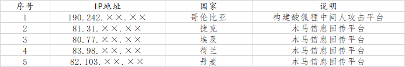
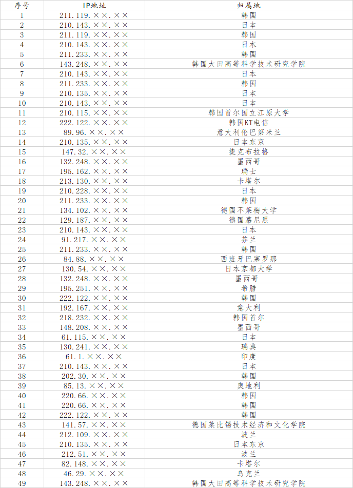

2022年6月22日，西北工业大学发布《公开声明》称，该校遭受境外网络攻击。陕西省西安市公安局碑林分局随即发布《警情通报》，证实在西北工业大学的信息网络中发现了多款源于境外的木马和恶意程序样本，西安警方已对此正式立案调查。
中国国家计算机病毒应急处理中心和360公司全程参与了此案的技术分析工作。技术团队先后从西北工业大学的多个信息系统和上网终端中提取到了木马程序样本，综合使用国内现有数据资源和分析手段，并得到欧洲、东南亚部分国家合作伙伴的通力支持，全面还原了相关攻击事件的总体概貌、技术特征、攻击武器、攻击路径和攻击源头，初步判明相关攻击活动源自于美国国家安全局（NSA）的“特定入侵行动办公室”（即：Office of Tailored Access Operation，后文简称“TAO”）。
本系列研究报告将公布TAO对西北工业大学发起的上千次网络攻击活动中，某些特定攻击活动的重要细节，为全球各国有效发现和防范TAO的后续网络攻击行为提供可以借鉴的案例。
一、TAO攻击渗透西北工业大学的流程
TAO对他国发起的网络攻击技战术针对性强，采取半自动化攻击流程，单点突破、逐步渗透、长期窃密。
（一）单点突破、级联渗透，控制西北工业大学网络
经过长期的精心准备，TAO使用“酸狐狸”平台对西北工业大学内部主机和服务器实施中间人劫持攻击，部署“怒火喷射”远程控制武器，控制多台关键服务器。利用木马级联控制渗透的方式，向西北工业大学内部网络深度渗透，先后控制运维网、办公网的核心网络设备、服务器及终端，并获取了部分西北工业大学内部路由器、交换机等重要网络节点设备的控制权，窃取身份验证数据，并进一步实施渗透拓展，最终达成了对西北工业大学内部网络的隐蔽控制。
（二）隐蔽驻留、“合法”监控，窃取核心运维数据
TAO将作战行动掩护武器“精准外科医生”与远程控制木马NOPEN配合使用，实现进程、文件和操作行为的全面“隐身”，长期隐蔽控制西北工业大学的运维管理服务器，同时采取替换3个原系统文件和3类系统日志的方式，消痕隐身，规避溯源。TAO先后从该服务器中窃取了多份网络设备配置文件。利用窃取到的配置文件，TAO远程“合法”监控了一批网络设备和互联网用户，为后续对这些目标实施拓展渗透提供数据支持。
（三）搜集身份验证数据、构建通道，渗透基础设施
TAO通过窃取西北工业大学运维和技术人员远程业务管理的账号口令、操作记录以及系统日志等关键敏感数据，掌握了一批网络边界设备账号口令、业务设备访问权限、路由器等设备配置信息、FTP服务器文档资料信息。根据TAO攻击链路、渗透方式、木马样本等特征，关联发现TAO非法攻击渗透中国境内的基础设施运营商，构建了对基础设施运营商核心数据网络远程访问的“合法”通道，实现了对中国基础设施的渗透控制。
（四）控制重要业务系统，实施用户数据窃取
TAO通过掌握的中国基础设施运营商的思科PIX防火墙、天融信防火墙等设备的账号口令，以“合法”身份进入运营商网络，随后实施内网渗透拓展，分别控制相关运营商的服务质量监控系统和短信网关服务器，利用“魔法学校”等专门针对运营商设备的武器工具，查询了一批中国境内敏感身份人员，并将用户信息打包加密后经多级跳板回传至美国国家安全局总部。
二、窃取西北工业大学和中国运营商敏感信息
（一）窃取西北工业大学远程业务管理账号口令、操作记录等关键敏感数据
TAO通过在西北工业大学运维管理服务器安装嗅探工具“饮茶”，长期隐蔽嗅探窃取西北工业大学运维管理人员远程维护管理信息，包含网络边界设备账号口令、业务设备访问权限、路由器等设备配置信息等。
遭到嗅探的网络设备类型包括固定互联网的接入网设备（路由器、认证服务器等）、核心网设备（核心路由器、交换机、防火墙等），也包括通信基础设施运营企业的重要设备（数据服务平台等），内容包括账号、口令、设备配置、网络配置等信息。
1、窃取西工大核心网络设备账号口令及配置信息
北京时间20××年12月11日6时52分，TAO以位于日本京都大学的代理服务器（IP：130.54.××.××）为攻击跳板，非法入侵了西北工业大学运维网络的“telnet”管理服务器，上传并安装NOPEN木马，然后级联控制其内网监控管理服务器，上述2台服务器事先均已被安装“饮茶”嗅探工具。TAO远程操控木马检索并下载被压缩加密的监听记录文件，然后清痕退出。窃取数据包括路由器、核心网设备（核心路由器、交换机、防火墙）管理账号、口令、设备配置、网络配置等信息。
2、多次窃取接入网认证设备账号口令及配置信息
（1）北京时间20××年5月30日0时28分，TAO以位于日本的代理服务器（IP：210.135.××.××）为攻击跳板，非法入侵了西北工业大学运维网络“telnet”管理服务器，上传并安装NOPEN木马，然后级联控制其内网监控管理服务器，这2台服务器事先均已被安装“饮茶”嗅探工具，TAO远程操控木马检索并下载窃密记录文件后清痕退出。窃取数据包括接入网认证设备的账号、口令及配置信息。
（2）北京时间20××年7月4日1时12分，TAO利用位于德国莱比锡技术经济和文化学院的代理服务器（IP：141.57.××.××）作为攻击跳板，非法入侵西北工业大学运维网络“telnet”管理服务器，上传并安装NOPEN木马工具，级联控制其内网监控管理服务器等其他3台服务器，这4台服务器事先均已被安装“饮茶”嗅探工具，TAO远程操控木马检索并下载窃密文件后清痕退出。
（3）北京时间20××年10月11日10时35分，TAO利用位于韩国首尔国立江原大学的代理服务器（IP：210.115.××.××）作为攻击跳板，非法入侵西北工业大学运维网络监控管理服务器，上传并安装NOPEN木马工具，然后级联控制其内网备份服务器、认证服务器等其他4台服务器，这5台服务器事先均已被安装“饮茶”嗅探工具，TAO远程操控木马分别检索并下载窃取记录文件后清痕退出。
（4）北京时间20××年10月19日2时46分，TAO以位于韩国大田的高等科学技术研究学院的代理服务器（IP：143.248.××.××）为攻击跳板，非法入侵西北工业大学运维网络“telnet”管理服务器，级联控制其内网监管服务器等其他2台服务器，这3台服务器事先均已被安装“饮茶”嗅探工具，TAO通过远程操控木马检索并下载窃密文件，然后清痕退出。
（二）窃取西北工业大学网络设备运维配置文件和日志文件
美国国家安全局“特定入侵行动办公室”（TAO）长期攻击入侵西北工业大学网络运维管理服务器，秘密窃取网络设备运维配置文件和日志文件。
1、窃取西北工业大学网络运行日志文件
北京时间20××年3月2日3时41分，TAO通过位于日本的代理服务器（IP：210.135.××.××）非法入侵控制西北工业大学1台网络运维管理服务器。3时49分，TAO从该运维管理服务器横向移动到另一台运维监控服务器，以特定字符串为关键词检索日志文件并进行窃取了一批系统运行日志文件和系统日常自检报告备份文件。
2、窃取西北工业大学服务器定期任务配置脚本
北京时间20××年10月11日10时41分，TAO通过位于韩国的代理服务器（IP：210.115.××.××）入侵控制了西北工业大学一台内网服务器。10时48分，TAO经过两次横向移动，入侵了另一台内网服务器，访问了特定目录下的定期任务配置脚本，共检索到14个用于定期执行任务的配置文件。随后，一次性窃取了这14个文件，这些文件可用于执行定期清理、备份、检查电源等操作。
3、窃取西北工业大学公司服务器系统信息文件
北京时间20××年6月6日1时27分，TAO通过位于韩国的代理服务器（IP：222.122.××.××）入侵控制了西北工业大学一台内网服务器。2时4分，TAO经过两次横向移动，入侵了另一台内网服务器，访问了目录/var/下的系统文件，窃取了60个常用的系统信息文件，被窃取的系统信息文件内容包含系统发行版本、用户密码哈希、用户权限、本地域名解析配置等。
（三）渗透控制中国基础设施核心设备
美国国家安全局“特定入侵行动办公室”（TAO）利用窃取到的网络设备账号口令，以“合法”身份进入中国某基础设施运营商服务网络，控制相关服务质量监控系统，窃取用户隐私数据。
1、窃取中国用户隐私数据
北京时间20××年3月7日22时53分，美国国家安全局“特定入侵行动办公室”（TAO）通过位于墨西哥的攻击代理148.208.××.××，攻击控制中国某基础设施运营商的业务服务器211.136.××.××，通过两次内网横向移动（10.223.140.××、10.223.14.××）后，攻击控制了用户数据库服务器，非法查询多名身份敏感人员的用户信息。
同日15时02分，TAO将查询到的用户数据保存在被攻击服务器/var/tmp/.2e434fd8aeae73e1/erf/out/f/目录下，被打包回传至攻击跳板，随后窃密过程中上传的渗透工具、用户数据等攻击痕迹被专用工具快速清除。
美国国家安全局“特定入侵行动办公室”（TAO）运用同样的手法，分别于北京时间20××年1月10日23时22分、1月29日8时41分、3月28日22时00分、6月6日23时58分，攻击控制另外1家中国基础设施业务服务器，非法多批次查询、导出、窃取多名身份敏感人员的用户信息。
2、渗透控制全球电信基础设施
据分析，美国国家安全局“特定入侵行动办公室”（TAO）以上述手法，利用相同的武器工具组合，“合法”控制了全球不少于80个国家的电信基础设施网络。技术团队与欧洲和东南亚国家的合作伙伴通力协作，成功提取并固定了上述武器工具样本，并成功完成了技术分析，拟适时对外公布，协助全球共同抵御和防范美国国家安全局NSA的网络渗透攻击。
三、TAO在攻击过程中暴露身份的相关情况
美国国家安全局“特定入侵行动办公室”（TAO）在网络攻击西北工业大学过程中，暴露出多项技术漏洞，多次出现操作失误，相关证据进一步证明对西北工业大学实施网络攻击窃密行动的幕后黑手即为美国国家安全局NSA。兹摘要举例如下：
（一）攻击时间完全吻合美国工作作息时间规律
美国国家安全局“特定入侵行动办公室”（TAO）在使用tipoff激活指令和远程控制NOPEN木马时，必须通过手动操作，从这两类工具的攻击时间可以分析出网络攻击者的实际工作时间。
首先，根据对相关网络攻击行为的大数据分析，对西北工业大学的网络攻击行动98%集中在北京时间21时至凌晨4时之间，该时段对应着美国东部时间9时至16时，属于美国国内的工作时间段。其次，美国时间的全部周六、周日中，均未发生对西北工业大学的网络攻击行动。第三，分析美国特有的节假日，发现美国的“阵亡将士纪念日”放假3天，美国“独立日”放假1天，在这四天中攻击方没有实施任何攻击窃密行动。第四，长时间对攻击行为密切跟踪发现，在历年圣诞节期间，所有网络攻击活动都处于静默状态。依据上述工作时间和节假日安排进行判断，针对西北工业大学的攻击窃密者都是按照美国国内工作日的时间安排进行活动的，肆无忌惮，毫不掩饰。
（二）语言行为习惯与美国密切关联
技术团队在对网络攻击者长时间追踪和反渗透过程中（略）发现，攻击者具有以下语言特征：一是攻击者有使用美式英语的习惯；二是与攻击者相关联的上网设备均安装英文操作系统及各类英文版应用程序；三是攻击者使用美式键盘进行输入。
（三）武器操作失误暴露工作路径
20××年5月16日5时36分（北京时间），对西北工业大学实施网络攻击人员利用位于韩国的跳板机（IP:222.122.××.××），并使用NOPEN木马再次攻击西北工业大学。在对西北工业大学内网实施第三级渗透后试图入侵控制一台网络设备时，在运行上传PY脚本工具时出现人为失误，未修改指定参数。脚本执行后返回出错信息，信息中暴露出攻击者上网终端的工作目录和相应的文件名，从中可知木马控制端的系统环境为Linux系统，且相应目录名“/etc/autoutils”系TAO网络攻击武器工具目录的专用名称（autoutils）。
出错信息如下：
Quantifier follows nothing in regex; marked by <– HERE in m/* <– HERE .log/ at ../etc/autoutils line 4569
（四）大量武器与遭曝光的NSA武器基因高度同源
此次被捕获的、对西北工业大学攻击窃密中所用的41款不同的网络攻击武器工具中，有16款工具与“影子经纪人”曝光的TAO武器完全一致；有23款工具虽然与“影子经纪人”曝光的工具不完全相同，但其基因相似度高达97%，属于同一类武器，只是相关配置不相同；另有2款工具无法与“影子经纪人”曝光工具进行对应，但这2款工具需要与TAO的其它网络攻击武器工具配合使用，因此这批武器工具明显具有同源性，都归属于TAO。
（五）部分网络攻击行为发生在“影子经纪人”曝光之前
技术团队综合分析发现，在对中国目标实施的上万次网络攻击，特别是对西北工业大学发起的上千次网络攻击中，部分攻击过程中使用的武器攻击，在“影子经纪人”曝光NSA武器装备前便完成了木马植入。按照NSA的行为习惯，上述武器工具大概率由TAO雇员自己使用。
四、TAO网络攻击西北工业大学武器平台IP列表
技术分析与溯源调查中，技术团队发现了一批TAO在网络入侵西北工业大学的行动中托管所用相关武器装备的服务器IP地址，举例如下：

五、TAO网络攻击西北工业大学所用跳板IP列表

研究团队经过持续攻坚，成功锁定了TAO对西北工业大学实施网络攻击的目标节点、多级跳板、主控平台、加密隧道、攻击武器和发起攻击的原始终端，发现了攻击实施者的身份线索，并成功查明了13名攻击者的真实身份。
Last modified on 2022-09-27